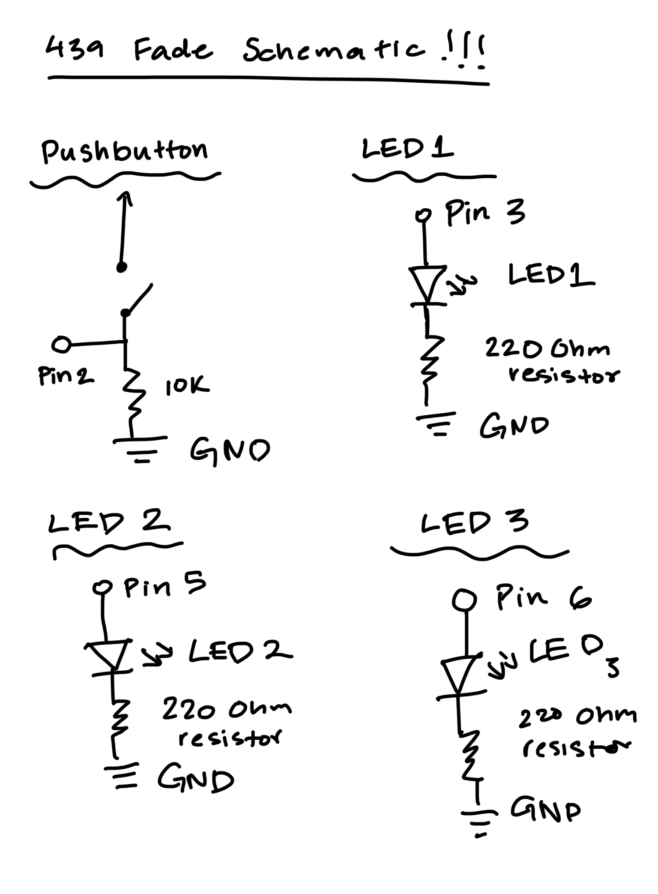
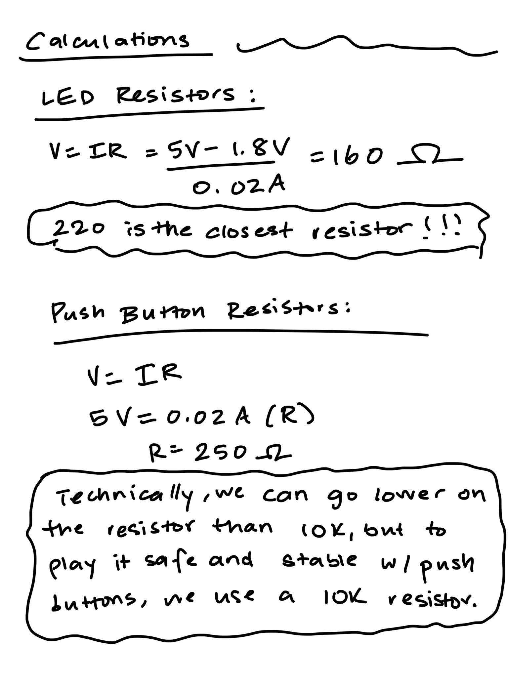

Fade Circuit!
Take a look at my Fade circuit!

Code Snippet
const int button = 2; //initializing the button pin
const int leds[] = {3, 5, 6}; //initializing the led pins
void setup() {
for (int i = 0; i < 3; i++) pinMode(leds[i], OUTPUT); // Set LED pins as outputs
pinMode(button, INPUT); // Set button pin as input
}
void loop() {
if (digitalRead(button) == HIGH) { // Check if button is pressed
digitalWrite(leds[0], LOW); //if button pressed all leds off
digitalWrite(leds[1], LOW);//if button pressed all leds off
digitalWrite(leds[2], LOW);//if button pressed all leds off
} else { // If button is not pressed
for (int brightness = 0; brightness <= 255; brightness++) { // Fade LEDs up and down
for (int i = 0; i < 3; i++) analogWrite(leds[i], brightness); // Fade up
if (digitalRead(button) == HIGH) { // Check if button is pressed to immediately turn off
break; //leaves loop and goes back to initial if statement where all leds are off
}
delay(10); //between fade up and down
}
for (int brightness = 255; brightness >= 0; brightness--) {
for (int i = 0; i < 3; i++) analogWrite(leds[i], brightness); // Fade down
if (digitalRead(button) == HIGH) { // Check if button is pressed
break; //leaves loop and goes back to initial if statement where all leds are off
}
delay(10); //between fades
}
}
}
Schematics and Calculations
The above image displays schematics for the button and three LEDs respectively. All of these circuits require different pins and resistor types which are shown. Calculations for these follow below.
These calculations show how resistors were calculated for the button and LEDs. The equation V=IR was used, substituting the known factors--for LED resistors we use 5 V and the voltage drop, in addition to the allowed 0.02 A amount, to calculate 160 ohms. The closest resistor to 160 ohms is 220 ohms, which is what we use. For the button, we use 5 V and 0.02 A to calculate the resistor ohms--we get 250 ohms for this. Technically we can go lower on the resistor than 10k in this case, but that is the suggested amount because otherwise we waste battery.
Additional Questions
Question 1

This question is based on the duty cycles for the different brightnesses of analogWrite. AnalogWrite(led,255) represents a 100% duty cycle, analogWrite(led,128) represents a 50% duty cycle, and analogWrite(led,64) represents a 25% duty cycle, so each cycle has a voltage increase, stagnancy, and drop but varies in how long this lasts. The first cycles have been colored in to show more explicitly exactly how long they last.
Question 2

My circuit would run for around 55 hours, as seen in the picture above. First we calculate the mA for one red LED, which is 14.5mA, and multiply it by 3 for all 3 LEDs. That gives us 43.5mA which must be divided by 2 to account for the fade, which then gives us 21.75mA. Lastly we divide the 1200mAH by 21.75 to get 55.17 hours.